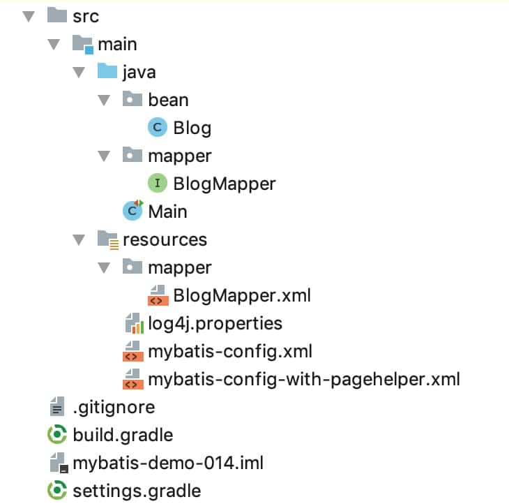

15. 分页查询
什么是分页（pagination）
例如在数据库的某个表里有1000条数据，我们每次只显示100条数据，在第1页显示第0到第99条，在第2页显示第100到199条，依次类推，这就是分页。
分页可以分为逻辑分页和物理分页。
逻辑分页是我们的程序在显示每页的数据时，首先查询得到表中的1000条数据，然后成熟根据当前页的“页码”选出其中的100条数据来显示。不推荐使用。物理分页是程序先判断出该选出这1000条的第几条到第几条，然后数据库根据程序给出的信息查询出程序需要的100条返回给我们的程序。
我们以见 01. 数据准备 的blog 表为例学习如何使用mybatis进行分页查询。
blog 表数据如下：
mysql> select * from blog;
+----+----------+---------------+--------------+
| id | owner_id | title | content |
+----+----------+---------------+--------------+
| 1 | 1 | 标题1 | 文本1 |
| 2 | 1 | 标题2 | 文本2 |
| 3 | 1 | 标题3 | 文本3 |
| 4 | 1 | 标题4 | 文本4 |
| 5 | 1 | 标题5 | 文本5 |
| 6 | 2 | 标题21 | 文本21 |
| 7 | 1 | 你好, World | 你好, 😆 |
+----+----------+---------------+--------------+
本节示例代码在 mybatis-demo-014 。
项目结构：

log4j.properties 中配置让 mybatis 输出执行信息。
示例1：在 sql 中显式使用 limit
在 BlogMapper 接口中增加方法：
List<Blog> findByUserId(Long ownerId, Integer limit, Integer offset);
该方法作用是查询某个用户按照id升序排序的所有文章中，第limit篇开始的共offset篇博客。注意， limit 从 0 开始。
BlogMapper.xml 中的SQL 映射：
<select id="findByUserId" resultType="bean.Blog">
SELECT
id,
owner_id AS ownerId,
title,
content
FROM
blog
WHERE
owner_id = #{param1}
ORDER BY id ASC
LIMIT #{param2}, #{param3}
</select>
这个属于物理查询。
在 Main 类中编写示例代码：
@Test
public void test_01() throws IOException {
SqlSession sqlSession = getSqlSession();
BlogMapper blogMapper = sqlSession.getMapper(BlogMapper.class);
List<Blog> blogList = blogMapper.findByUserId(1L, 0, 2);
blogList.forEach(item -> {
log.info("blog: {}", item);
});
}
private SqlSession getSqlSession() throws IOException {
SqlSessionFactory sessionFactory;
sessionFactory = new SqlSessionFactoryBuilder()
.build(Resources.getResourceAsReader("mybatis-config.xml"));
return sessionFactory.openSession();
}
执行 test_01 函数，结果为：
DEBUG [main] - Logging initialized using 'class org.apache.ibatis.logging.slf4j.Slf4jImpl' adapter.
DEBUG [main] - PooledDataSource forcefully closed/removed all connections.
DEBUG [main] - PooledDataSource forcefully closed/removed all connections.
DEBUG [main] - PooledDataSource forcefully closed/removed all connections.
DEBUG [main] - PooledDataSource forcefully closed/removed all connections.
DEBUG [main] - Opening JDBC Connection
DEBUG [main] - Created connection 1075738627.
DEBUG [main] - Setting autocommit to false on JDBC Connection [com.mysql.jdbc.JDBC4Connection@401e7803]
DEBUG [main] - ==> Preparing: SELECT id, owner_id AS ownerId, title, content FROM blog WHERE owner_id = ? ORDER BY id ASC LIMIT ?, ?
DEBUG [main] - ==> Parameters: 1(Long), 0(Integer), 2(Integer)
DEBUG [main] - <== Total: 2
INFO [main] - blog: Blog(id=1, ownerId=1, title=标题1, content=文本1)
INFO [main] - blog: Blog(id=2, ownerId=1, title=标题2, content=文本2)
中间可以看到 mybatis 的执行语句和参数。最后两行是得到的查询结果。
示例2：使用 RowBounds 进行逻辑分页查询
mybatis 自带一个 RowBounds 类可以实现逻辑分页。
在 BlogMapper 接口中定义方法：
List<Blog> findByUserIdWithRowBounds(Long ownerId, RowBounds rowBounds);
该方法作用是查询某个用户按照id升序排序的所有文章中，第rowBounds.getLimit()篇开始的共rowBounds.getOffset()篇博客。注意， limit 从 0 开始。mybatis 会自动识别出 RowBounds 参数。
BlogMapper.xml 中对应的 SQL 不必写 limit：
<select id="findByUserIdWithRowBounds" resultType="bean.Blog">
SELECT
id,
owner_id AS ownerId,
title,
content
FROM
blog
WHERE
owner_id = #{param1}
ORDER BY id ASC
</select>
在 Main 类中编写示例代码：
@Test
public void test_02() throws IOException {
SqlSession sqlSession = getSqlSession();
BlogMapper blogMapper = sqlSession.getMapper(BlogMapper.class);
List<Blog> blogList = blogMapper.findByUserIdWithRowBounds(1L, new RowBounds(0, 2));
blogList.forEach(item -> {
log.info("blog: {}", item);
});
}
执行结果：
DEBUG [main] - Logging initialized using 'class org.apache.ibatis.logging.slf4j.Slf4jImpl' adapter.
DEBUG [main] - PooledDataSource forcefully closed/removed all connections.
DEBUG [main] - PooledDataSource forcefully closed/removed all connections.
DEBUG [main] - PooledDataSource forcefully closed/removed all connections.
DEBUG [main] - PooledDataSource forcefully closed/removed all connections.
DEBUG [main] - Opening JDBC Connection
DEBUG [main] - Created connection 1075738627.
DEBUG [main] - Setting autocommit to false on JDBC Connection [com.mysql.jdbc.JDBC4Connection@401e7803]
DEBUG [main] - ==> Preparing: SELECT id, owner_id AS ownerId, title, content FROM blog WHERE owner_id = ? ORDER BY id ASC
DEBUG [main] - ==> Parameters: 1(Long)
INFO [main] - blog: Blog(id=1, ownerId=1, title=标题1, content=文本1)
INFO [main] - blog: Blog(id=2, ownerId=1, title=标题2, content=文本2)
可以看到执行的 SQL 并为使用 limit ，但获取的数据只有2条。这是因为mybatis把所有符合条件的数据都取出来了，然后根据 RowBounds 对象的内容取出部分数据返回。这种逻辑分页很明显是有问题的，比如有10000000条数据满足条件，这么大的数据量全部从mysql取出来耗时很长，从mysql传到java程序耗时很长，java程序的内存占用也会变很高，所以不推荐这种实现。
但这种写法很方便，我们有保持这种写法，而分页查询是物理分页的方案吗？有，用mybatis的拦截器（理解为插件，可以获取要执行的sql，修改sql）。已经有人做出这样的拦截器了，我们直接拿来用。
示例3：使用 RowBounds + PageHelper 进行物理分页查询
PageHelper（https://github.com/pagehelper/Mybatis-PageHelper） 是一个Mybatis分页插件，特性很丰富。
在 build.gradle 中引入依赖：
compile group: 'com.github.pagehelper', name: 'pagehelper', version: '5.1.7'
新建一个 mybatis-config-with-pagehelper.xml ，内容和mybatis-config.xml 基本一样，但引入了 pagehelper 插件：
<configuration>
<plugins>
<plugin interceptor="com.github.pagehelper.PageInterceptor">
<property name="rowBoundsWithCount" value="true"/>
</plugin>
</plugins>
<!-- 省略展示其他配置 -->
<!-- ... -->
</configuration>
在 Main 类中编写示例代码：
@Test
public void test_03() throws IOException {
SqlSession sqlSession = getSqlSessionWithPageHelperPluginInConfigXml();
BlogMapper blogMapper = sqlSession.getMapper(BlogMapper.class);
List<Blog> blogList = blogMapper.findByUserIdWithRowBounds(1L, new RowBounds(0, 2));
blogList.forEach(item -> {
log.info("blog: {}", item);
});
}
private SqlSession getSqlSessionWithPageHelperPluginInConfigXml() throws IOException {
SqlSessionFactory sessionFactory;
sessionFactory = new SqlSessionFactoryBuilder()
.build(Resources.getResourceAsReader("mybatis-config-with-pagehelper.xml"));
return sessionFactory.openSession();
}
test_03 执行结果：
DEBUG [main] - Logging initialized using 'class org.apache.ibatis.logging.slf4j.Slf4jImpl' adapter.
DEBUG [main] - PooledDataSource forcefully closed/removed all connections.
DEBUG [main] - PooledDataSource forcefully closed/removed all connections.
DEBUG [main] - PooledDataSource forcefully closed/removed all connections.
DEBUG [main] - PooledDataSource forcefully closed/removed all connections.
DEBUG [main] - Created connection 323326911.
DEBUG [main] - Returned connection 323326911 to pool.
DEBUG [main] - Cache Hit Ratio [SQL_CACHE]: 0.0
DEBUG [main] - Opening JDBC Connection
DEBUG [main] - Checked out connection 323326911 from pool.
DEBUG [main] - Setting autocommit to false on JDBC Connection [com.mysql.jdbc.JDBC4Connection@134593bf]
DEBUG [main] - ==> Preparing: SELECT count(0) FROM blog WHERE owner_id = ?
DEBUG [main] - ==> Parameters: 1(Long)
DEBUG [main] - <== Total: 1
DEBUG [main] - ==> Preparing: SELECT id, owner_id AS ownerId, title, content FROM blog WHERE owner_id = ? ORDER BY id ASC LIMIT ?
DEBUG [main] - ==> Parameters: 1(Long), 2(Integer)
DEBUG [main] - <== Total: 2
INFO [main] - blog: Blog(id=1, ownerId=1, title=标题1, content=文本1)
INFO [main] - blog: Blog(id=2, ownerId=1, title=标题2, content=文本2)
可以看到执行的SQL语句中出现了 LIMIT 。LIMIT 0, 2 与 LIMIT 2含义是一样的。